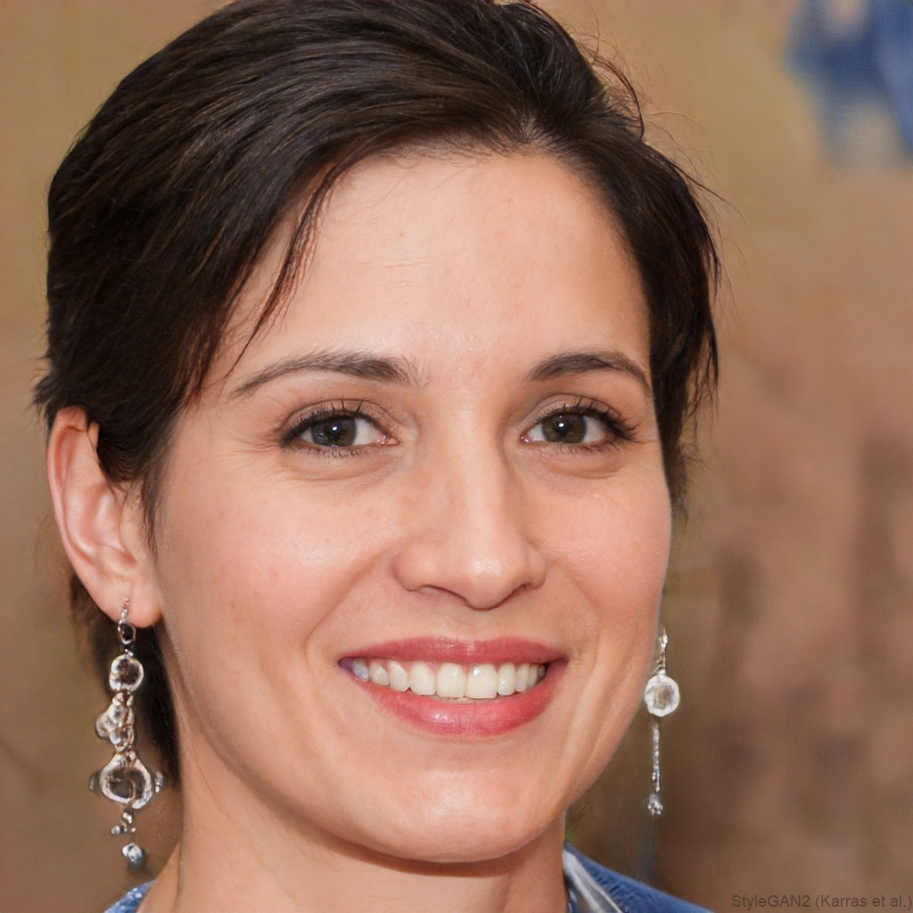
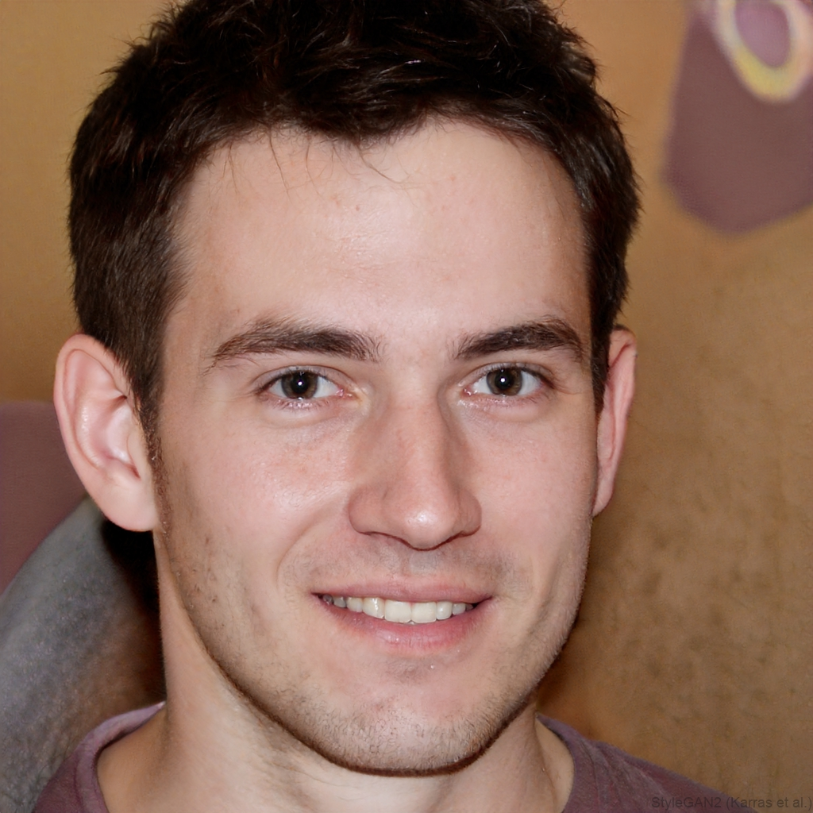
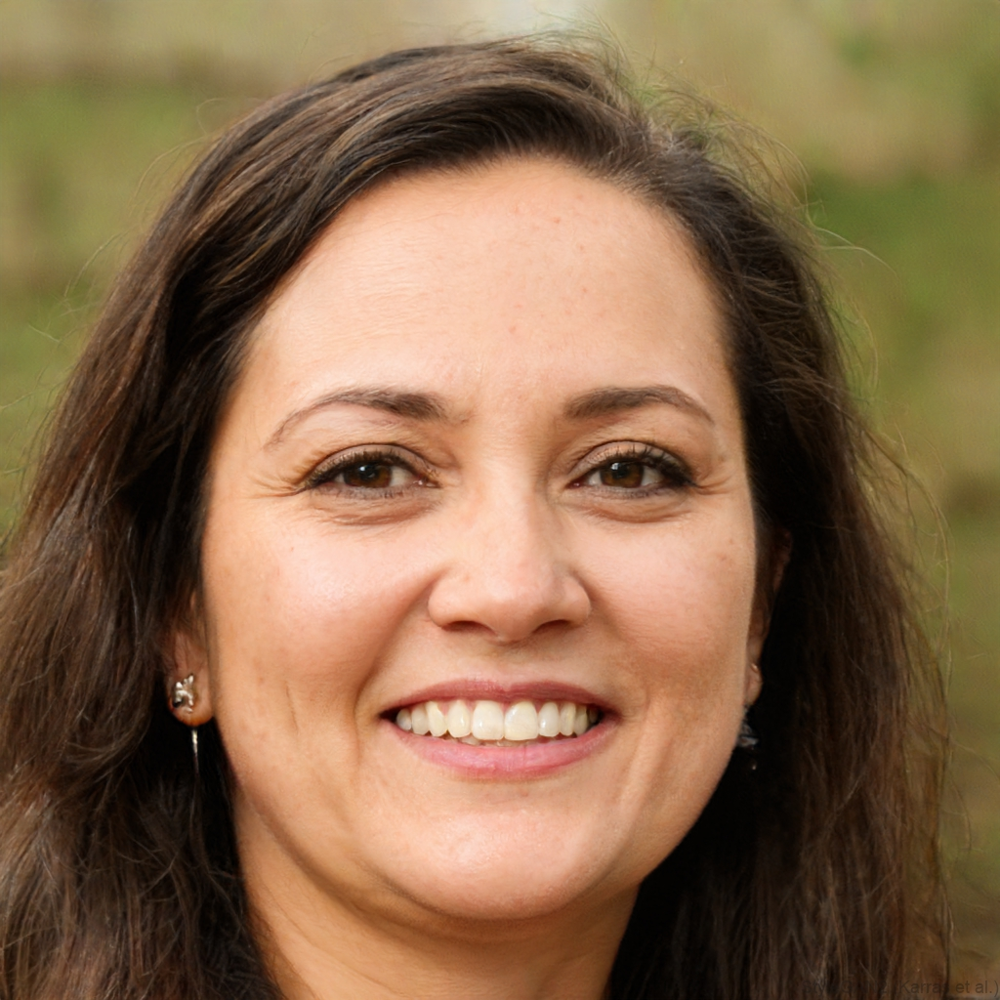

Direzione • Cura artistica • Produzione
CHI SIAMO?
PoPaCi Pictures è una società di produzione audiovisiva con sede in Ticino, attiva nello
sviluppo di progetti cinematografici e iniziative che indagano il rapporto tra immagine,
tecnologia e società contemporanea.
Il suo lavoro si colloca in un territorio di ricerca che
attraversa i linguaggi visivi e le trasformazioni introdotte dalle tecnologie emergenti, con
un’attenzione particolare alle implicazioni culturali e percettive dell’intelligenza artificiale.
Il Merge Film Festival nasce come luogo di incontro e di confronto diventando l’estensione
naturale del progetto PoPaCi sul territorio Cantonale. Il festival si configura come una
piattaforma culturale in cui cinema e intelligenza artificiale vengono messi in una relazione
volta ad interrogare lo spettatore nei processi creativi e nel modo in cui ridefiniscono
l’immaginario e l’esperienza del reale.
Team organizzativo
Il progetto è sviluppato da un team di giovani autori e professionisti attivitra cinema e arti visive con competenze che integrano ricerca artistica,
produzione e organizzazione.
Festival team
Dario Cirrincione
Direttore generale, direttore artistico

Regista, autore, selezionatore audiovisivo e produttore svizzero, Dario Cirrincione ricopre il
ruolo di Direttore generale e Direttore artistico del Merge Film Festival.
È cofondatore della
società indipendente PoPaCi Pictures SNC, attraverso la quale sviluppa progetti
cinematografici, artistici e iniziative culturali tra la Svizzera e il contesto internazionale.
Ha
diretto Present, un cortometraggio che esplora e ibrida diversi formati espressivi, includendo
anche l’impiego dell’intelligenza artificiale. L’opera è stata selezionata in diversi festival
internazionali tra cui il World AI Film Festival.
Festival team
Francesco Poloni
Direttore operativo, direttore artistico

Regista, autore, selezionatore audiovisivo e produttore svizzero, Francesco Poloni ricopre il
ruolo di Direttore operativo e Direttore artistico del Merge Film Festival.
È cofondatore della
società indipendente PoPaCi Pictures SNC, attraverso la quale sviluppa progetti
cinematografici, artistici e iniziative culturali tra la Svizzera e il contesto internazionale.
Ha
diretto il cortometraggio Tusen Toner che è stato selezionato nella sezione Pardi di domani
del Locarno Film Festival 2025, dove ha vinto il Pardino d’argento SRG SSR, uno dei
principali riconoscimenti dedicati ai nuovi autori emergenti.
Festival team
Liam Pagnamenta
Direttore finanziario, direttore artistico

Produttore svizzero e selezionatore audiovisivo Liam Pagnamenta ricopre il ruolo di Direttore
finanziario e Direttore artistico del Merge Film Festival.
È cofondatore della società
indipendente PoPaCi Pictures SNC, attraverso la quale sviluppa progetti cinematografici,
artistici e iniziative culturali tra la Svizzera e il contesto internazionale.
È attualmente
produttore di un cortometraggio interamente realizzato con intelligenza artificiale che indaga
l’AI e i suoi impatti sulla dimensione umana, interrogando il modo in cui ridefinisce
percezione, identità e relazione con il reale.
Festival team
Gabriele Crasci
Direttore comunicativo
Montatore, regista, autore audiovisivo, Gabriele Crasci ricopre il ruolo di Direttore
comunicativo del Merge Film Festival.
In questa funzione coordina e orienta strategicamente
l’intero dipartimento comunicazione, definendone linee operative e obiettivi, e
supervisionando le attività dell’ufficio stampa, del team editoriale e delle aree marketing,
identità visiva e branding del festival.
Festival team
Lucas Previtali
???
Festival team
Emma Cavadini
???